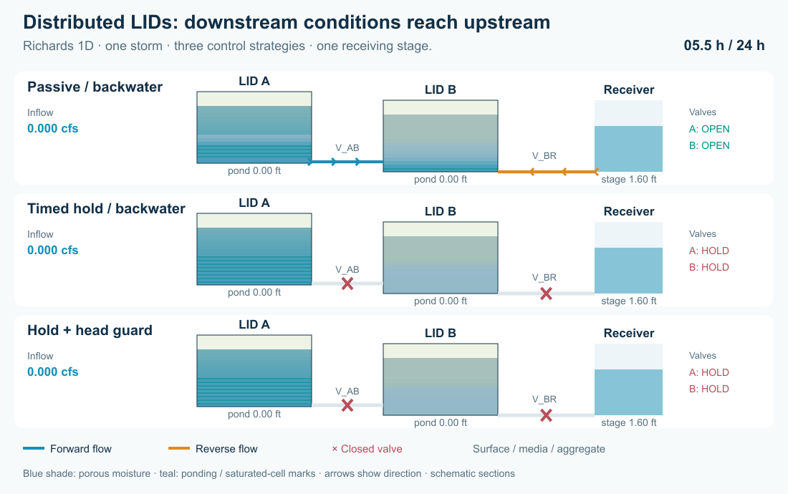
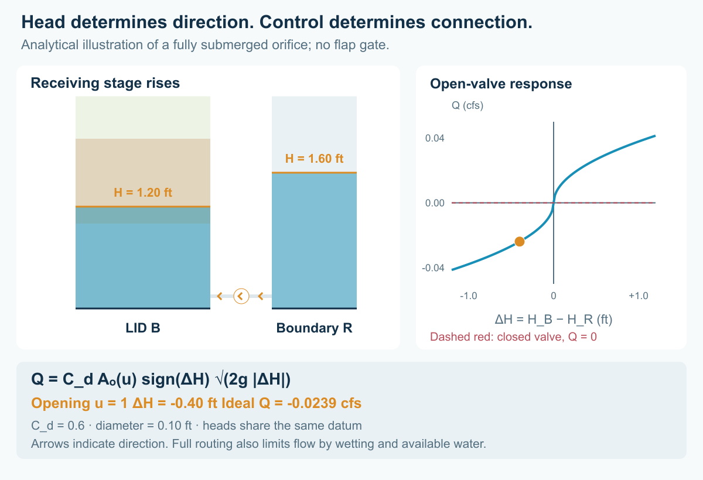
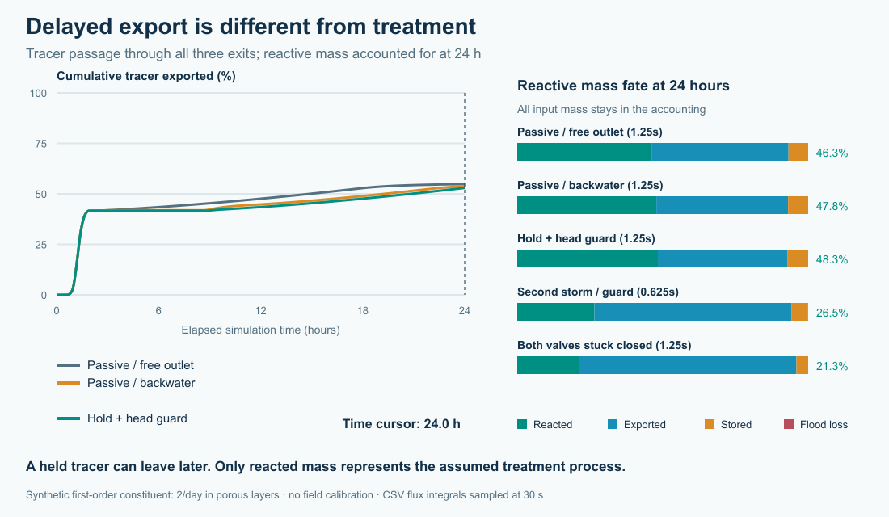
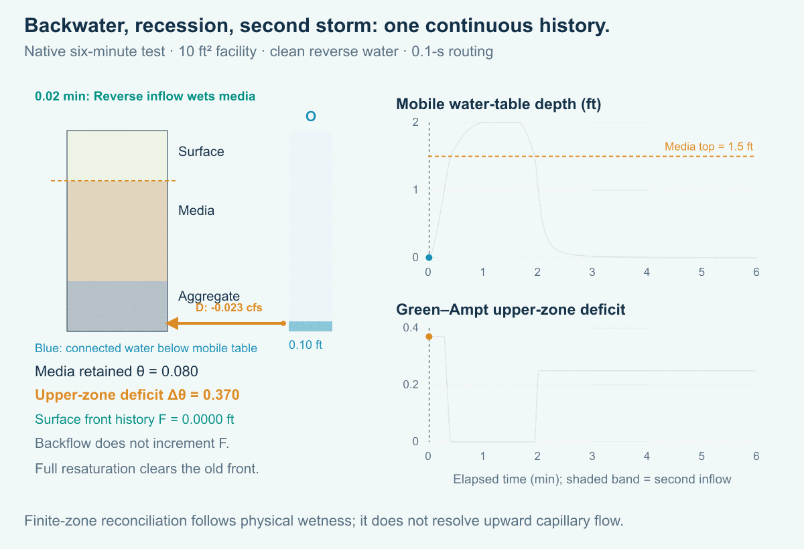
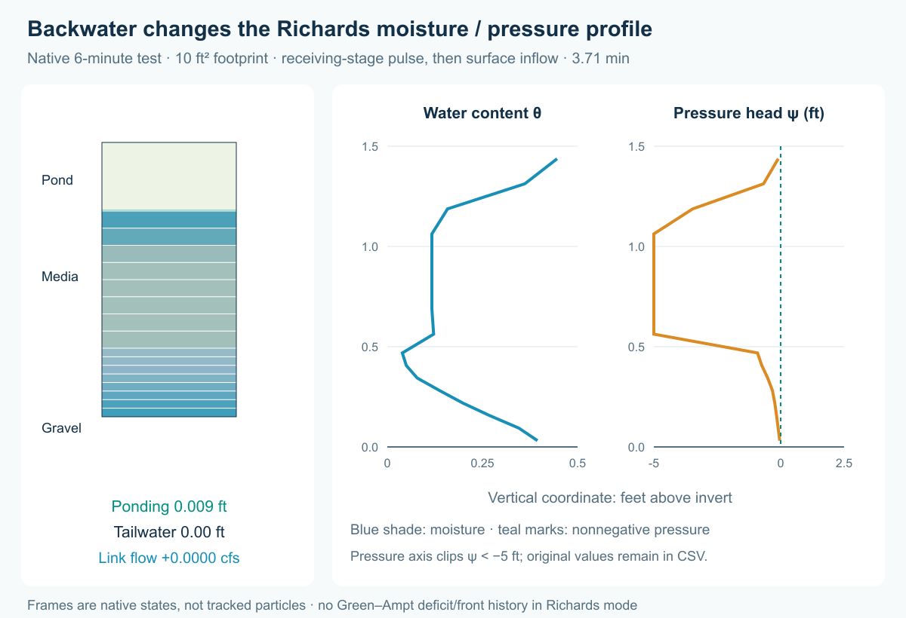

Explore two chained storage-node LIDs as a connected system. Compare passive outlets, timed detention, downstream-head guards, a second storm and valve failure. Assess flow attenuation and cumulative pollutant fate at every exit.
The uniquely named download copies are in docs/manual/tutorials/models/ as richards_*.inp; source decks are in lid_richards_chain/. Copy the downloads into a working folder. Each contains all time series; no rainfall or external data file is required.
| Download | Experiment |
|---|---|
| richards_01_passive_free.inp | Open valves and low receiving stage |
| richards_02_passive_backwater.inp | Open valves and high downstream stage |
| richards_03_timed_hold.inp | Hold A until 6 h and B until 8 h |
| richards_04_head_guard.inp | Timed hold plus downstream-head guards |
| richards_05_repeat_storm.inp | Guarded system with a second larger pulse |
| richards_06_stuck_closed.inp | Both valves remain closed during both storms |
These are synthetic tests with hypothetical treatment kinetics. They are not calibrated design recommendations. They require an engine containing the optional Richards 1D implementation and pollutant-balance corrections. The original gravity/front decks remain in models/lid_active_chain/; their previous result matrix is preserved separately in the article's validation package. Do not compare either formulation without identifying its material parameters and initial state. Use Dynamic Wave and QUALITY_SOLVER LEGACY.
Open richards_01_passive_free.inp. A and B are 1,000 ft² constant-footprint storage nodes, with inverts 0.30 ft and 0 ft and maximum depths of 2.50 ft. V_AB connects A to B; V_BR connects B to receiving outfall R. W_A and W_B connect surface overflows to separate outfalls FA and FB. Do not omit these overflow exits from the system assessment.

A receives a triangular 0–0.30–0 cfs pulse at 0–1–2 h: 1,080 ft³. REACTIVE and TRACER each enter at 20 mg/L. TRACER has no reaction; REACTIVE is a hypothetical first-order constituent. Direct rainfall on a storage-node footprint must come from a contributing subcatchment or explicit inflow.
Select A, then B, in the Object Browser. Set LID Control to Train and LID Initial Saturation (%) to 10. Open Model → LID Control and select Train. For a new control, choose New layered LID and set Media / aggregate layers to 2.
| Ordered layer | Physical properties in this CFS project |
|---|---|
| 1 SURFACE | Thickness 6 in; vegetation fraction 0.1 |
| 2 MEDIA | Thickness 12 in; porosity 0.45; field capacity 0.20; wilting point 0.08; conductivity 5 in/h; conductivity slope 3; suction 3 in |
| 3 AGGREGATE | Thickness 12 in; porosity 0.40; conductivity 100 in/h |
| BOTTOM boundary | Seepage 0; clogging 0 |
Select Richards 1D in Flow model. Under Physical properties, enter the following additional material properties for both porous layers. Alpha and specific storage use inverse metres even in this US-unit project.
| Property | MEDIA | AGGREGATE |
|---|---|---|
| Residual water content | 0.03 | 0.01 |
| Retention alpha (1/m) | 4 | 20 |
| Retention n | 1.8 | 2.5 |
| Pore connectivity l | 0.5 | 0.5 |
| Specific storage (1/m) | 0.0001 | 0.0001 |
Expand Numerical settings: use 8 numerical cells per porous layer, absolute water-content tolerance 1e-7, relative tolerance 1e-5, and maximum internal step 30 s. Field capacity, conductivity slope and Green–Ampt suction are retained for the existing model; they do not specify the Richards retention/conductivity law. These retention properties are illustrative, not calibrated defaults.
Select each porous layer and open Pollutant treatment. Add pollutant REACTIVE, set Removal (%) = 0, Decay (1/day) = 2, and leave Expression empty. TRACER has no treatment row. Use Apply layers and treatment. Total physical thickness is 30 inches: 2.50 ft. BOTTOM is a boundary, not a treatment layer. See SWMMVis manual for captured physical-property and treatment editor views.
Equivalent native records are:
[LID_CONTROLS]
Train NODE
Train SURFACE 6 .1
Train MEDIA 12 .45 .20 .08 5 3 3
Train AGGREGATE 12 .40 100
Train BOTTOM 0 0
[LID_RICHARDS]
Train OPTIONS 8 1e-7 1e-5 30
Train 2 .03 4 1.8 .5 .0001
Train 3 .01 20 2.5 .5 .0001
[LID_NODES]
A Train 10
B Train 10
[LID_LAYER_TREATMENT]
Train 2 REACTIVE 0 2 -
Train 3 REACTIVE 0 2 -For porous cell geometric volume G, pressure head psi and specific storage Ss, complete water volume is W = G (theta(psi) + Ss max(psi, 0)). Van Genuchten retention bounds theta by porosity; positive pressure adds elastic storage. The porous column owns this water. The network node owns surface ponding only; no saturated water is duplicated in a shared reactor.
The conservative semi-discrete equations are dW_i/dt = Q_(i-1/2) - Q_(i+1/2) - E_i, with downward-positive face flow Q_f = A_f K_f (H_upper - H_lower) / distance and H = z + psi. Equal cells of one material use arithmetic conductivity; different-material interfaces use both half-cell resistances in series. Matric-head differences can augment, oppose or reverse gravity flow. Richards mode has no field-capacity cutoff or Green–Ampt front history.
Adaptive implicit Euler (BDF1) integrates the spatial equations, accepting two half steps after an error estimate. Routing and column updates are split across the routing interval. Check routing-step, cell-count and ODE-tolerance sensitivity, not only continuity. The article validation reports measured differences rather than asserting universal convergence.


For quality, porous cells each carry their own pollutant inventory even when saturated. Accepted directional transfers move donor concentration times volume, bounded by resident mass. Layer decay is first order at 2/day, giving an 8.3-h half-life; longer exposure gives more reaction by assumption. Fixed removal is applied once at an authored-layer exit, not at each internal numerical face. Surface overflow bypasses buried treatment.

A conventional subcatchment LID has one underdrain definition with one opening/closing threshold pair and an optional head-based discharge curve. The storage-node LID instead accepts any number of ordinary network links at different elevations. Each controllable link can have its own rules and opening setting; an orifice representing a valve accepts settings from 0 (closed) through partial openings to 1 (fully open). The supplied decks use 0 and 1. A setting of 0.5 specifies half the opening, not necessarily half the discharge, because flow also depends on head and the link geometry.

In SWMMVis, add each connection as a separate link in the map, edit its offset or LID outlet layer and position properties, then give that link its own actions in Model → Data Objects → Control Rules…. A low-level drain and a high-level overflow can coexist on the same LID node; additional intermediate outlets can be controlled independently.
V_AB is a side orifice with diameter 0.15 ft and coefficient 0.6. Its authored orifice offset is 0.05 ft above the A invert. A link between two LID nodes uses explicit offsets rather than a single-ended LID anchor. V_BR has diameter 0.10 ft and coefficient 0.6; its anchor is layer 3 / BOTTOM. W_A and W_B are transverse weirs with coefficient 3.3, 0.5-ft crest width and 0.5-ft section height. Their physical crests are 2.0 ft above the respective node inverts, at layer 1 / BOTTOM.
[LID_NODE_OUTLETS]
V_BR 3 BOTTOM
W_A 1 BOTTOM
W_B 1 BOTTOMOpen richards_02_passive_backwater.inp. R's Tailwater time series is zero until 3 h, rises linearly to 1.60 ft at 4 h, stays there until 7 h, then falls to zero at 9 h. The deck explicitly uses OUTFALL_BACKFLOW_QUALITY ZERO: returning boundary water is clean. With held-concentration backflow, imported pollutant must also be counted in the mass balance.
Open richards_03_timed_hold.inp, then Model → Data Objects → Control Rules…. Inspect the two rules that keep V_AB closed until 6 h and V_BR until 8 h. Open richards_04_head_guard.inp to inspect the complete guarded rule set.
A representative downstream-head rule is:
RULE IsolateB
IF NODE R HEAD > 1.25
THEN ORIFICE V_BR SETTING = 0
PRIORITY 3
RULE KeepBIsolated
IF NODE R HEAD > 1.05
AND LINK V_BR SETTING < 0.5
THEN ORIFICE V_BR SETTING = 0
PRIORITY 3
RULE ReliefB
IF NODE B DEPTH > 2.20
AND NODE R HEAD < 1.05
THEN ORIFICE V_BR SETTING = 1
PRIORITY 5The receiving-boundary guard uses R HEAD = 1.25/1.05 ft. V_AB's guard uses B HEAD = 2.25/2.05 ft, above its 2.0-ft media top. These are surface ponding thresholds in Richards mode, not the old mobile-water-table thresholds. The reopening band avoids rapid switching at a single threshold. HEAD is an absolute hydraulic elevation; DEPTH is relative to the selected node's invert. The relief rule opens only when downstream head is low. It does not replace an emergency overflow. In Richards mode node HEAD and DEPTH describe surface ponding. Buried links use local cell pressure; inspect the live cell profile for those heads. Use the supplied full deck to reproduce all rules and priorities. Save a separate copy when editing.
In Model → Simulation Options…, set Routing step to 1.25 s on the Time Steps page and set Variable step factor to 0 in Routing & Hydraulics → Solver (VARIABLE_STEP 0) for a controlled comparison. The download copies use 1.25 s for the first four strategies and stuck-closed case, and 0.625 s for the second storm. The source decks retain a 0.5-s authored step; the figure runner overrides it. The completed routing and cell/tolerance checks, and the second-storm 1.25-s failure, are disclosed below.

Check water and pollutant continuity. For each pollutant, include initial mass, all external sources, outfall discharge, flooding, seepage, reacted mass and final inventory. Reported storage includes retained and mobile water. A low effluent concentration or a closed valve does not prove removal.



These animations show the same sampled runs. The mass-fate bars are final 24-hour totals; only the time-series curves progressively reveal simulated time. Static versions of both figures appear above.
| Richards first-storm strategy (1.25 s, 8 cells/material) | Sampled V_BR peak (cfs) | Tracer 50% export (h) | Reacted by 24 h |
|---|---|---|---|
| Passive / free outlet | 0.0038 | 14.88 | 46.3% |
| Passive / backwater | 0.0155 | 19.27 | 47.8% |
| Timed hold | 0.0074 | 20.82 | 48.3% |
| Hold + head guard | 0.0074 | 20.82 | 48.3% |
richards_05_repeat_storm.inp adds a 0–0.45–0 cfs pulse at 9–10–11 h. richards_06_stuck_closed.inp holds both orifices closed for all 24 hours. Examine surface bypass, any flooding and the mass left at the end. Compare every exit to the environment, not only V_BR. Do not credit retained pollutant as treated pollutant. Examine the remaining capacity before the second pulse. At the illustrated 0.625-second step the guarded two-storm run conveys approximately 1,743 ft³ through the emergency weirs; the stuck-closed run conveys approximately 2,016 ft³ through the weirs. Neither case has a flooding loss in the corrected runs. These volumes use cumulative engine accounting rather than snapshot sums.
Open lid_richards_resaturation.inp. This separate six-minute, 10 ft² fixture has 6 in SURFACE, 12 in MEDIA and 6 in AGGREGATE; media Ks is 24 in/h, initial saturation 10%, and the Richards retention properties are the same as the chain. A reversible 0.30-ft side orifice joins S to O. O rises to 2 ft at 20 s, holds through 100 s and returns to zero at 120 s. Surface supply is 0.02 cfs at minutes 3–4; it carries 10 mg/L TRACER. Reverse boundary water is clean. The bottom is sealed.
Use routing steps 0.1 and 0.05 s and a 1-s report interval. Inspect signed D flow and the live section's cell moisture and pressure. Reverse inflow changes the basal cell inventory, and signed Richards fluxes redistribute water vertically. The later pulse meets that evolved profile. This fixture does not force complete saturation of every media cell.


Richards hotstart extension 11 preserves complete porous-cell water and material/discretization identity. Use a fresh run after incompatible edits. Runtime aquifer-bed exchange, water age, heat and MSX are not yet supported with Richards nodes; the supplied fixtures use closed bottoms and standard pollutant routing.
The six examples were run with Richards explicitly enabled. The first four illustrated strategies use eight cells per porous material and a common 1.25-second fixed routing step; the second-storm figure uses 0.625 s and the stuck-closed case 1.25 s. The publication package contains 14 checkpointed complete case/numerics combinations, including finer routing, 4/16-cell and tighter ODE-tolerance checks. All these completed runs passed the 0.5% water/tracer/reactive continuity criterion without engine warnings; maximum reported error was 5.03e-11%. The two-storm case failed at 1.25 s with a Richards adaptive-step-limit error; it is retained as a failed check, not counted as a pass. The pressure-profile fixture passed at 0.1 and 0.05 s. These are not numerically converged performance predictions: routing-step and cell-count changes materially affect outlet peaks, reverse volumes and treatment exposure. The recorded Richards publication verification passed 9 kernel tests and 49 of 50 LID-node integration tests; the US/SI storage-equivalence fixture remains failing. The older 241-test/20-run evidence applies to the previous gravity/front implementation, not Richards.
| Guarded Richards case at 1.25 s | Sampled V_BR peak (cfs) | Reacted by 24 h | Emergency bypass (ft³) |
|---|---|---|---|
| 4 cells per porous material | 0.0120 | 39.87% | 555.4 |
| 8 cells per porous material | 0.0074 | 48.33% | 449.4 |
| 16 cells per porous material | 0.0014 | 53.97% | 394.3 |
The grid dependence is large enough that these runs cannot establish a robust ranking of control strategies. The guarded case’s tighter ODE tolerance changes reacted fraction by 0.000 percentage points; this does not resolve the distinct cell-size/routing coupling sensitivity. Further numerical verification and measured retention properties are needed before design use. The 02_passive_backwater peak changes from 0.0155 to 0.0199 cfs at 0.625 s. The 04_head_guard peak changes from 0.0074 to 0.0115 cfs at 0.625 s.
Independent testing identified another problem in the earlier gravity/front model: an inlet above the reported water table could keep filling a partially submerged cell as retained moisture, while that cell stopped free drainage as soon as its bottom was submerged. At porosity, its remaining mobile capacity collapsed and its water inventory was abruptly reclassified. Water was conserved, but the resulting head and hydrograph were wrong. The reproduced free-outlet case rose 0.993 ft in 30 seconds while total water fell from about 517 to 514 ft³; the backwater case rose 0.631 ft at about hour 2.675. The correction keeps partially submerged cells draining retained excess and routes incoming water to mobile storage when the receiving cell intersects the water table, even if its inlet is above that table. Only fully submerged cells skip free drainage. This is the reduced model’s cell-level coupling approximation, not a resolved local Richards pressure field. After correction, the largest 30-second rise in B is about 0.0031 ft in both examples, and the free-outlet case no longer has the artificial reversal into A. All six legacy examples passed water/tracer/reactive balances at 0.5 and 0.25 s (12 completed runs); the current LID-node suite passes 52 of 53 tests, including three new regressions for partial-cell drainage, inlet ownership and per-step routed-head continuity. The previously reported Richards US/SI fixture still fails. These results replace the affected legacy performance comparison; the Richards figures retain their separately identified run provenance. Continuity is necessary, but head continuity and a physically consistent storage partition must also be checked.
Change only one feature per saved copy: the hold duration, receiving stage, second-storm timing, footprint, media conductivity or decay coefficient. Run a no-reaction control first. Try an additional LID in the chain and compare all receiving-water exits over a common simulation horizon. Repeat with smaller routing steps; check pollutant continuity and convergence of peak flows, bypass volumes and treatment metrics separately. Flooding losses must remain visible even when a run has a small continuity error.
These decks have closed bottom boundaries and do not include groundwater. A future tutorial will investigate the spatial groundwater model and the pathways between distributed recharge and receiving waters.